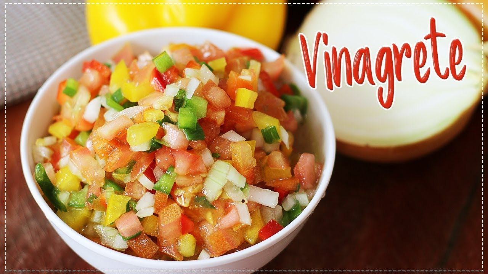

SALADA DE VINAGRETE SIMPLES
Ingredientes:
- 2 cebolas grandes cortadas em cubos
- 1/2 pimentão verde
- 1 xícara de chá de azeite
- 2 tomates sem sementes e cortados em cubos
- 1/2 xícara de chá de vinagre
MODO DE PREPARO
- Comece por higienizar os legumes e descascar as cebolas. Em seguida corte os tomates e o pimentão pela metade e retire as sementes. Pique tudo em cubinhos com mais ou menos o mesmo tamanho.
- Coloque todos os ingredientes do vinagrete numa tigela e acrescente o suco do limão, o vinagre, o sal e azeite a gosto. Misture tudo e reserve na geladeira por, no mínimo 30 minutos, para apurar bem o sabor.
SALADA CAESAR

Ingredientes:
- 1 maço de alface americana lavada e escorrida
- 2 colheres de sopa de queijo ralado
- 1/2 de alface lisa e lavada e escorrida
- 2 xícara de croutons
- 3 pacotes de queijo ralado
- 1 pitada de pimenta-do-reino
- 1 pitada de molho de pimenta
- 1 vidro grande maionese
- 3 file de anchova (se não tiver o anchova,pode substituir por atum)
- 1 colher de sopa de alho moído
- 1 colher de sopa de mostarda
- 8 pães francese
- 1 pitada de molho de pimenta vermelha
- 2 colheres de azeite de oliva
- 1 pitada de pimenta-do-reino
- 1/2 xícara de queijo ralado
Molho:
Croutons:
MODO DE PREPARO
- Rasgue as folhas da alface com as mãos e disponha em uma saladeira.
- Espalhe o queijo ralado e os croutons sobre a salada.
- No liquidificador bata o queijo ralado, a pimenta do reino, o molho de pimenta vermelha, anchova, o alho.
- Retire o molho do liquidificador, coloque em um recipiente e misture a maionese suavemente, adicione a mostarda e mexa suavemente.
- Corte os pães em cubinhos.
- Coloque em um recipiente,adicione meia xícara de queijo ralado, 1 pitada de pimenta-do-reino, molho de pimenta vermelha e 2 colheres de sopa de azeite de oliva (se não tiver substitua por óleo).
- No recipiente mexa suavemente os pães com os ingredientes adicionado e leve ao forno em potência baixa para os pães ficarem torradinho e crocante e deixe por 5 minutos, olhe de vez em quando para não torrar demais.